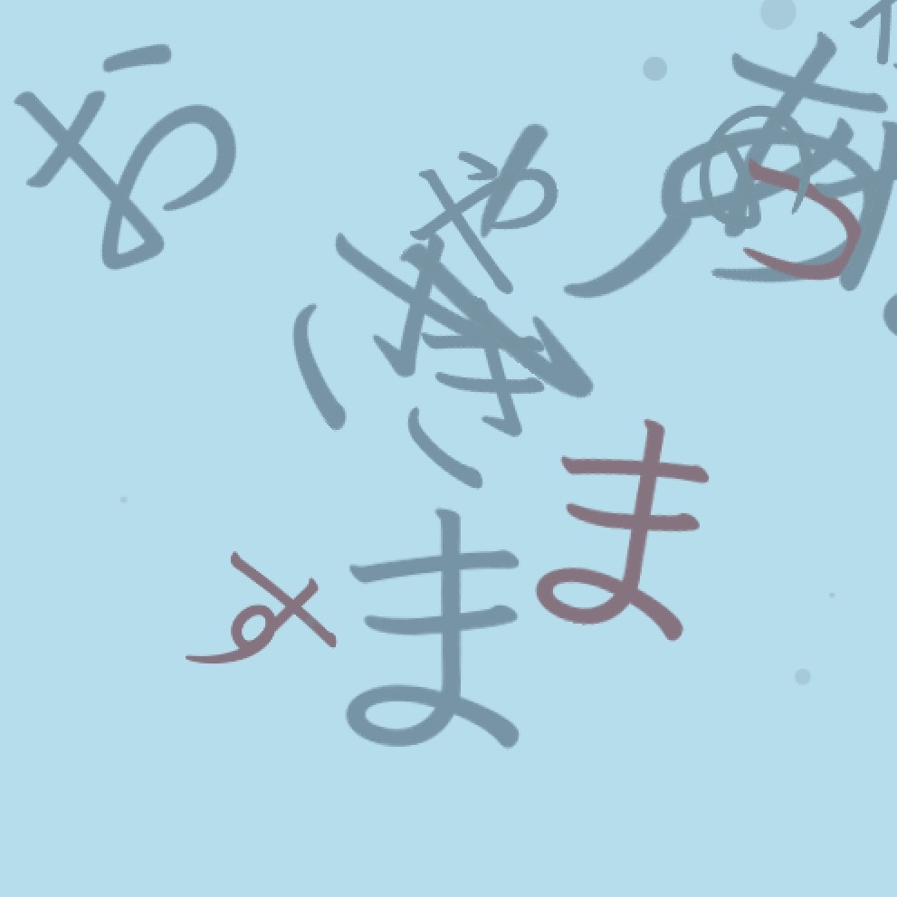

Master Student at University of Tokyo
Cyber Interface Laboratory
Exchange Student in University of Washington
Works

Publication
- Yuqian Sun, Takuji Narumi, Shigeo Yoshida, Tomohiro Tanikawa, Michitaka Hirose, Basic Study for Emotion Regulation Based on a Two-Factor Theory of Emotion, ASIAGRAPH 2017, KAOHSIUNG